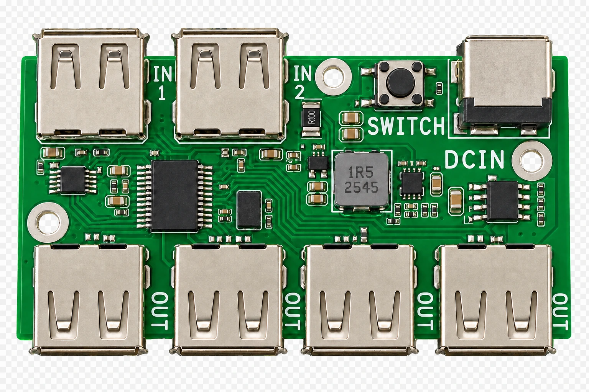
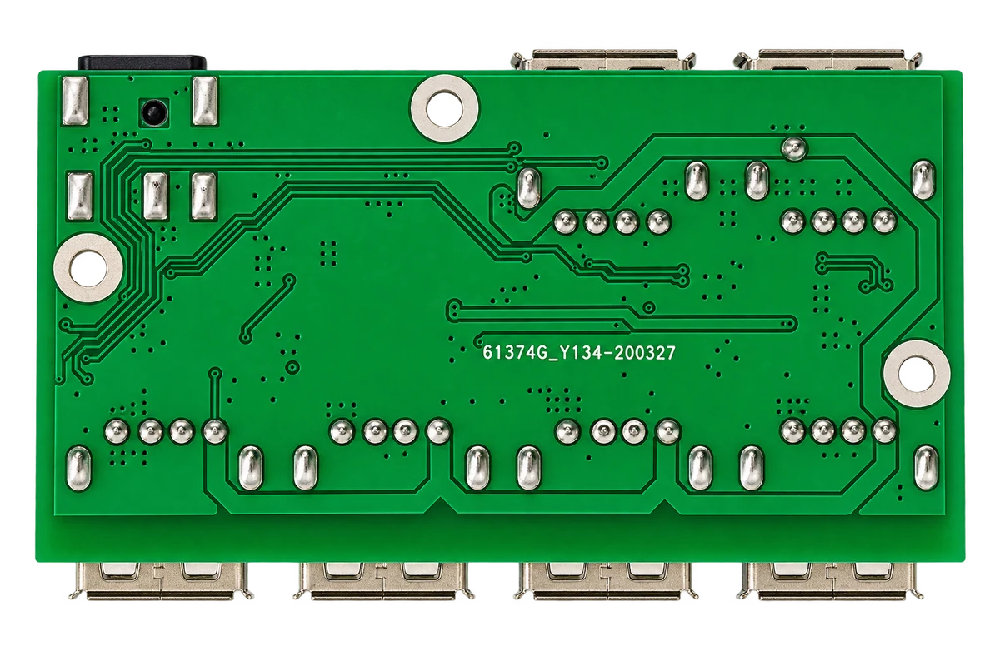

2つのホスト入力
IN1とIN2に2台のホストを接続します。
USB切替・拡張
2台のホストで同じUSB機器を共有できる、ボタン切替式4ポートUSB 2.0ハブです。

IN1とIN2に2台のホストを接続します。
4個のUSB-A OUTに共有周辺機器を接続します。
基板上のボタンで制御するホストを選択します。
GL850Gベースの回路が選択入力を4ポートに拡張します。
DCINからハブと周辺機器へ独立給電できます。
NB679同期降圧回路が大電流5Vを生成します。
高速USBマルチプレクサが選択ホストをハブへ接続します。
ESD保護、BOM、OrCAD、Allegro PCB、Gerberを収録します。
USB切替・拡張
